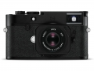

器材库 > 35mm画幅可换镜头数码相机 > M10-D

规格总览
产品类型
35mm画幅可换镜头数码相机
发布日期
2018-10-24
影像规格
影像传感器
CMOS
影像传感器尺寸
36×24mm
有效像素
2400万
影像处理器
徕卡Maestro II 处理器
镜头和对焦
镜头卡口
Leica M
兼容镜头
徕卡M镜头
曝光控制
ISO感光度
100 - 50000
取景器/显示屏
取景器
亮框旁轴取景器
文件输入/输出
内置存储容量
2GB
存储卡
SD/SDHC, SDXC
无线功能
Wi-Fi
机身规格
材质
全金属机身：镁合金铸造，皮革饰面；黄铜机顶盖及底板。
颜色
黑色
尺寸
139×37.9×80mm
重量
含电池约660g
该产品暂无存档的网友点评
产品图 / 样片
M10-D
评测 / 相关文章
- 详细内容 （存档）
- ［资讯］徕卡M10-D官方样片图赏 （存档）
- ［资讯］Leica M10-D官方产品图 （存档）
相关文章
- ［资讯］数码芯，胶片魂——徕卡M10-D （存档）
- ［资讯］徕卡M10-D官方样片图赏 （存档）
- ［资讯］Leica M10-D官方产品图 （存档）